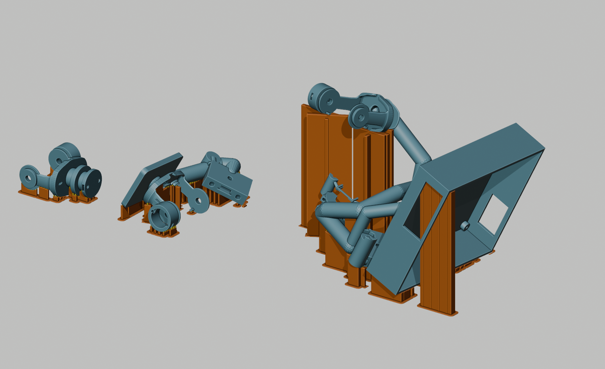

← 彩色三维与打印文件 · 安装教程
POSEDOLL / O22-F2 / 2026-10-06
验证范围与试打说明
交付状态：工程试打版。本版完成了支撑设计、几何检查和拓竹切片检查，尚未进行实物打印、拆除试验或有限元受力分析。另有 148 处本体出丝小区域缺少前一层覆盖，已全部列出；它们尚未获得可靠打印的结论。请勿把“成功生成切片”理解为“整套可直接批量打印”。
150原始零件网格类型
186 + 7主套实例 + 额外试件
6,183连接齿实例的逐层出丝存在检查
290支撑连通体有首层出丝
本次纠正的结构问题
在原 O22 零件上进行刚性旋转与排布，构造垂直落盘的宽鳍、底脚及必要的横向加强肋。连接齿与本体和鳍均有实际体积交叠；鳍主体与本体没有体积交叠。打印 3MF 中，零件与其可拆支撑已布尔合并；识别页中的蓝、橙、黄仍分别显示原始本体、鳍和齿。
150 种零件各做约 118–119 个重力方向的几何初筛，对问题较多的零件又比较了实际支撑构造后的候选结果。评价考虑高度、悬垂、落盘通路和可拆除空间。这是有限候选的几何搜索，不是全局最优证明，也不是材料受力模拟。
| 示例 | 原摆放高度 → 新高度 | 设计要点 |
|---|
| P033 头部 C01 | 45.2 → 23.0 mm | 放低并增加可逐齿检查的实际连接 |
| X050 头部骨架 | 72.6 → 40.3 mm | 旋转后降低悬垂与支撑高度 |
| W016 左脚骨架 | 84.6 → 37.9 mm | 宽直板落盘，避免细长斜撑 |
| X046 胸架 | 107.8 → 99.0 mm | 最高鳍约 90.8 mm、宽约 23.4 mm、厚 2.4 mm，配横向加强肋；仍需高件试打 |
多数鳍高不超过 35 mm。胸架与部分锁骨支撑是例外；并未把所有鳍都声称为“低矮”。横向加强属于几何改良，尚无可报告的安全系数或挠度。

已完成的数字检查
- 逐类型比较原网格与变换前网格，旋转矩阵行列式为 1；没有缩放或修改原零件轮廓。新添的牺牲连接齿仅位于支撑界面。
- 实体布尔检查：鳍主体与零件无体积交叠；每个齿连通分量同时接触零件和鳍；每个鳍连通分量到达 Z=0，并在 Z=0.1 mm 有非零截面。已有功能保护区也参与碰撞检查；它不能替代实物五金试配。
- 原生导出的 12 个 Bambu 3MF 与已验证的合并网格逐顶点、逐三角形比较；未出现切片器修网格改动，自动支撑关闭。
- 从工程内 G-code 的实际正向挤出路径、圆弧和 LINE_WIDTH 重建二维出丝覆盖。检查每个连接齿包围区域对应层均有出丝、每个支撑连通体的首层区域有出丝。6,183 个齿实例未发现缺失层，290 个连通支撑体未发现首层缺失。这里的数量包括 7 个额外试件；连通体数量不是鳍板数量。
- 另外对全盘各层的出丝连通区域检查前层覆盖，结果见下方。上述逐齿区域存在性检查不等于测量实际粘接面积、抗弯强度或拆除力。
逐零件几何证据 · 交付汇总 JSON
尚未解决的本体出丝区域
判定方法：当前层面积大于 0.05 mm² 的出丝连通区域，与前一层向外扩 0.025 mm 后的交叠仍小于 0.001 mm²，就记为候选。圆弧折线弦误差不超过 0.015 mm，布尔坐标网格 0.0001 mm。该简化二维覆盖模型不能预测熔丝下垂、喷嘴拖拽或层间粘接。
这 148 处的包围矩形与对应高度的角色截面比较，均定位到蓝色原零件本体，未定位到橙色鳍或黄色齿。此结论用于定位，不表示它们是无害的桥接或已通过打印。部分是孔、内壁和局部轮廓附近的小段；最大候选约 2.53 mm²。当前保留原零件功能形状并交付这些未消除的位置，没有把它们隐去。
点击“三维定位”查看原几何与红框；点击“相邻层出丝图”查看灰色前层、蓝色当前层的实际出丝宽度。红框只是疑点范围。下载全部位置 CSV。
S01：6 处
| 序号 | 对象 | G-code Z / mm | 面积 / mm² | 位置 |
|---|
| 1 | S01-06 X005 head/C01_sensor_cassette | 0.40 | 0.602 | 三维定位 · 相邻层出丝图 |
| 2 | S01-01 P130 foot_l/C14 | 11.60 | 0.162 | 三维定位 · 相邻层出丝图 |
| 3 | S01-01 P130 foot_l/C14 | 11.80 | 0.533 | 三维定位 · 相邻层出丝图 |
| 4 | S01-01 P130 foot_l/C14 | 12.60 | 0.214 | 三维定位 · 相邻层出丝图 |
| 5 | S01-01 P130 foot_l/C14 | 14.00 | 0.230 | 三维定位 · 相邻层出丝图 |
| 6 | S01-01 P130 foot_l/C14 | 14.40 | 0.157 | 三维定位 · 相邻层出丝图 |
F01：14 处
F02：18 处
| 序号 | 对象 | G-code Z / mm | 面积 / mm² | 位置 |
|---|
| 1 | F02-07 X009 upperarm_r/C01_sensor_cassette | 0.40 | 0.602 | 三维定位 · 相邻层出丝图 |
| 2 | F02-07 X009 upperarm_r/C01_sensor_cassette | 0.40 | 0.602 | 三维定位 · 相邻层出丝图 |
| 3 | F02-08 X031 hand_r.flex/sensor_cassette | 0.40 | 0.603 | 三维定位 · 相邻层出丝图 |
| 4 | F02-08 X031 hand_r.flex/sensor_cassette | 0.40 | 0.602 | 三维定位 · 相邻层出丝图 |
| 5 | F02-09 X033 calf_r.flex/sensor_cassette | 0.40 | 0.603 | 三维定位 · 相邻层出丝图 |
| 6 | F02-09 X033 calf_r.flex/sensor_cassette | 0.40 | 0.602 | 三维定位 · 相邻层出丝图 |
| 7 | F02-01 X038 frame/pelvis | 21.20 | 0.157 | 三维定位 · 相邻层出丝图 |
| 8 | F02-01 X038 frame/pelvis | 22.20 | 0.158 | 三维定位 · 相邻层出丝图 |
| 9 | F02-01 X038 frame/pelvis | 22.40 | 0.290 | 三维定位 · 相邻层出丝图 |
| 10 | F02-01 X038 frame/pelvis | 23.20 | 0.475 | 三维定位 · 相邻层出丝图 |
| 11 | F02-01 X038 frame/pelvis | 23.60 | 0.157 | 三维定位 · 相邻层出丝图 |
| 12 | F02-01 X038 frame/pelvis | 24.40 | 0.359 | 三维定位 · 相邻层出丝图 |
| 13 | F02-01 X038 frame/pelvis | 27.40 | 0.231 | 三维定位 · 相邻层出丝图 |
| 14 | F02-01 X038 frame/pelvis | 29.00 | 0.389 | 三维定位 · 相邻层出丝图 |
| 15 | F02-01 X038 frame/pelvis | 30.00 | 0.158 | 三维定位 · 相邻层出丝图 |
| 16 | F02-01 X038 frame/pelvis | 30.00 | 0.900 | 三维定位 · 相邻层出丝图 |
| 17 | F02-01 X038 frame/pelvis | 30.20 | 0.157 | 三维定位 · 相邻层出丝图 |
| 18 | F02-01 X038 frame/pelvis | 30.80 | 0.223 | 三维定位 · 相邻层出丝图 |
F03：11 处
| 序号 | 对象 | G-code Z / mm | 面积 / mm² | 位置 |
|---|
| 1 | F03-01 X054 frame/clavicle_l | 6.60 | 0.155 | 三维定位 · 相邻层出丝图 |
| 2 | F03-01 X054 frame/clavicle_l | 7.20 | 0.222 | 三维定位 · 相邻层出丝图 |
| 3 | F03-04 P130 foot_r/C14 | 11.60 | 0.162 | 三维定位 · 相邻层出丝图 |
| 4 | F03-04 P130 foot_r/C14 | 11.80 | 0.533 | 三维定位 · 相邻层出丝图 |
| 5 | F03-04 P130 foot_r/C14 | 12.60 | 0.214 | 三维定位 · 相邻层出丝图 |
| 6 | F03-01 X054 frame/clavicle_l | 13.20 | 0.540 | 三维定位 · 相邻层出丝图 |
| 7 | F03-04 P130 foot_r/C14 | 14.00 | 0.231 | 三维定位 · 相邻层出丝图 |
| 8 | F03-04 P130 foot_r/C14 | 14.40 | 0.157 | 三维定位 · 相邻层出丝图 |
| 9 | F03-03 X050 frame/head | 17.00 | 2.526 | 三维定位 · 相邻层出丝图 |
| 10 | F03-03 X050 frame/head | 17.20 | 0.680 | 三维定位 · 相邻层出丝图 |
| 11 | F03-01 X054 frame/clavicle_l | 20.20 | 0.232 | 三维定位 · 相邻层出丝图 |
F04：11 处
| 序号 | 对象 | G-code Z / mm | 面积 / mm² | 位置 |
|---|
| 1 | F04-05 X018 foot_r/C02_sensor_cassette | 0.40 | 0.602 | 三维定位 · 相邻层出丝图 |
| 2 | F04-06 X030 forearm_r.twist/sensor_cassette | 0.40 | 0.602 | 三维定位 · 相邻层出丝图 |
| 3 | F04-06 X030 forearm_r.twist/sensor_cassette | 0.40 | 0.602 | 三维定位 · 相邻层出丝图 |
| 4 | F04-08 X021 elbow_l.flex/sensor_cassette | 0.40 | 0.602 | 三维定位 · 相邻层出丝图 |
| 5 | F04-08 X021 elbow_l.flex/sensor_cassette | 0.40 | 0.602 | 三维定位 · 相邻层出丝图 |
| 6 | F04-02 X073 frame/thigh_l | 11.40 | 0.780 | 三维定位 · 相邻层出丝图 |
| 7 | F04-02 X073 frame/thigh_l | 15.00 | 0.582 | 三维定位 · 相邻层出丝图 |
| 8 | F04-02 X073 frame/thigh_l | 18.80 | 1.213 | 三维定位 · 相邻层出丝图 |
| 9 | F04-02 X073 frame/thigh_l | 19.60 | 0.158 | 三维定位 · 相邻层出丝图 |
| 10 | F04-03 X062 frame/clavicle_r | 23.60 | 0.274 | 三维定位 · 相邻层出丝图 |
| 11 | F04-03 X062 frame/clavicle_r | 25.60 | 0.158 | 三维定位 · 相邻层出丝图 |
F05：11 处
| 序号 | 对象 | G-code Z / mm | 面积 / mm² | 位置 |
|---|
| 1 | F05-04 X029 elbow_r.flex/sensor_cassette | 0.40 | 0.602 | 三维定位 · 相邻层出丝图 |
| 2 | F05-04 X029 elbow_r.flex/sensor_cassette | 0.40 | 0.602 | 三维定位 · 相邻层出丝图 |
| 3 | F05-06 X004 chest/C02_sensor_cassette | 0.40 | 0.602 | 三维定位 · 相邻层出丝图 |
| 4 | F05-06 X004 chest/C02_sensor_cassette | 0.40 | 0.602 | 三维定位 · 相邻层出丝图 |
| 5 | F05-07 X007 upperarm_l/C01_sensor_cassette | 0.40 | 0.602 | 三维定位 · 相邻层出丝图 |
| 6 | F05-08 X003 chest/C01_sensor_cassette | 0.40 | 0.602 | 三维定位 · 相邻层出丝图 |
| 7 | F05-03 W005 frame/clavicle_l.protract_frame | 6.60 | 0.168 | 三维定位 · 相邻层出丝图 |
| 8 | F05-02 W017 frame/foot_r | 12.40 | 0.344 | 三维定位 · 相邻层出丝图 |
| 9 | F05-01 X080 frame/thigh_r | 14.20 | 0.246 | 三维定位 · 相邻层出丝图 |
| 10 | F05-03 W005 frame/clavicle_l.protract_frame | 23.80 | 0.191 | 三维定位 · 相邻层出丝图 |
| 11 | F05-03 W005 frame/clavicle_l.protract_frame | 34.20 | 0.232 | 三维定位 · 相邻层出丝图 |
F06：21 处
| 序号 | 对象 | G-code Z / mm | 面积 / mm² | 位置 |
|---|
| 1 | F06-09 X015 foot_l/C01_sensor_cassette | 0.40 | 0.602 | 三维定位 · 相邻层出丝图 |
| 2 | F06-08 X014 thigh_r/C02_sensor_cassette | 0.40 | 0.602 | 三维定位 · 相邻层出丝图 |
| 3 | F06-06 W001 frame/ball_r | 3.60 | 0.256 | 三维定位 · 相邻层出丝图 |
| 4 | F06-05 X042 frame/waist | 5.40 | 2.353 | 三维定位 · 相邻层出丝图 |
| 5 | F06-01 W016 frame/foot_l | 6.20 | 0.289 | 三维定位 · 相邻层出丝图 |
| 6 | F06-01 W016 frame/foot_l | 9.60 | 0.162 | 三维定位 · 相邻层出丝图 |
| 7 | F06-05 X042 frame/waist | 10.40 | 0.474 | 三维定位 · 相邻层出丝图 |
| 8 | F06-06 W001 frame/ball_r | 11.20 | 0.339 | 三维定位 · 相邻层出丝图 |
| 9 | F06-02 P130 foot_l/C14 | 11.60 | 0.163 | 三维定位 · 相邻层出丝图 |
| 10 | F06-04 X058 frame/upperarm_l | 11.80 | 0.259 | 三维定位 · 相邻层出丝图 |
| 11 | F06-04 X058 frame/upperarm_l | 11.80 | 0.259 | 三维定位 · 相邻层出丝图 |
| 12 | F06-02 P130 foot_l/C14 | 11.80 | 0.533 | 三维定位 · 相邻层出丝图 |
| 13 | F06-01 W016 frame/foot_l | 12.00 | 0.243 | 三维定位 · 相邻层出丝图 |
| 14 | F06-04 X058 frame/upperarm_l | 12.60 | 0.271 | 三维定位 · 相邻层出丝图 |
| 15 | F06-04 X058 frame/upperarm_l | 13.40 | 0.249 | 三维定位 · 相邻层出丝图 |
| 16 | F06-02 P130 foot_l/C14 | 14.00 | 0.228 | 三维定位 · 相邻层出丝图 |
| 17 | F06-02 P130 foot_l/C14 | 14.40 | 0.158 | 三维定位 · 相邻层出丝图 |
| 18 | F06-03 H004 frame/elbow_l | 21.60 | 0.259 | 三维定位 · 相邻层出丝图 |
| 19 | F06-05 X042 frame/waist | 22.20 | 0.206 | 三维定位 · 相邻层出丝图 |
| 20 | F06-05 X042 frame/waist | 31.60 | 0.236 | 三维定位 · 相邻层出丝图 |
| 21 | F06-05 X042 frame/waist | 37.00 | 0.157 | 三维定位 · 相邻层出丝图 |
F07：9 处
| 序号 | 对象 | G-code Z / mm | 面积 / mm² | 位置 |
|---|
| 1 | F07-01 X066 frame/upperarm_r | 9.20 | 0.618 | 三维定位 · 相邻层出丝图 |
| 2 | F07-02 W004 frame/forearm_l | 14.80 | 0.196 | 三维定位 · 相邻层出丝图 |
| 3 | F07-02 W004 frame/forearm_l | 20.40 | 0.296 | 三维定位 · 相邻层出丝图 |
| 4 | F07-02 W004 frame/forearm_l | 20.80 | 0.159 | 三维定位 · 相邻层出丝图 |
| 5 | F07-01 X066 frame/upperarm_r | 21.60 | 0.738 | 三维定位 · 相邻层出丝图 |
| 6 | F07-01 X066 frame/upperarm_r | 21.80 | 0.259 | 三维定位 · 相邻层出丝图 |
| 7 | F07-01 X066 frame/upperarm_r | 25.60 | 0.377 | 三维定位 · 相邻层出丝图 |
| 8 | F07-01 X066 frame/upperarm_r | 26.00 | 0.159 | 三维定位 · 相邻层出丝图 |
| 9 | F07-02 W004 frame/forearm_l | 26.40 | 0.301 | 三维定位 · 相邻层出丝图 |
F08：11 处
F09：15 处
F10：21 处
| 序号 | 对象 | G-code Z / mm | 面积 / mm² | 位置 |
|---|
| 1 | F10-25 X001 waist/C01_sensor_cassette | 0.40 | 0.602 | 三维定位 · 相邻层出丝图 |
| 2 | F10-05 X005 head/C01_sensor_cassette | 0.40 | 0.602 | 三维定位 · 相邻层出丝图 |
| 3 | F10-13 X027 clavicle_r.protract/sensor_cassette | 0.40 | 0.602 | 三维定位 · 相邻层出丝图 |
| 4 | F10-16 X028 clavicle_r.elevate/sensor_cassette | 0.40 | 0.602 | 三维定位 · 相邻层出丝图 |
| 5 | F10-02 X012 thigh_l/C02_sensor_cassette | 0.40 | 0.602 | 三维定位 · 相邻层出丝图 |
| 6 | F10-19 X006 head/C02_sensor_cassette | 0.40 | 0.602 | 三维定位 · 相邻层出丝图 |
| 7 | F10-04 X026 ball_l.flex/sensor_cassette | 0.40 | 0.602 | 三维定位 · 相邻层出丝图 |
| 8 | F10-19 X006 head/C02_sensor_cassette | 0.40 | 0.602 | 三维定位 · 相邻层出丝图 |
| 9 | F10-04 X026 ball_l.flex/sensor_cassette | 0.40 | 0.602 | 三维定位 · 相邻层出丝图 |
| 10 | F10-15 X010 upperarm_r/C02_sensor_cassette | 0.40 | 0.602 | 三维定位 · 相邻层出丝图 |
| 11 | F10-17 X017 foot_r/C01_sensor_cassette | 0.40 | 0.602 | 三维定位 · 相邻层出丝图 |
| 12 | F10-11 X016 foot_l/C02_sensor_cassette | 0.40 | 0.602 | 三维定位 · 相邻层出丝图 |
| 13 | F10-24 X002 waist/C02_sensor_cassette | 0.40 | 0.603 | 三维定位 · 相邻层出丝图 |
| 14 | F10-21 X008 upperarm_l/C02_sensor_cassette | 0.40 | 0.602 | 三维定位 · 相邻层出丝图 |
| 15 | F10-08 X024 hand_l.deviate/sensor_cassette | 0.40 | 0.603 | 三维定位 · 相邻层出丝图 |
| 16 | F10-06 X011 thigh_l/C01_sensor_cassette | 0.40 | 0.602 | 三维定位 · 相邻层出丝图 |
| 17 | F10-24 X002 waist/C02_sensor_cassette | 0.40 | 0.602 | 三维定位 · 相邻层出丝图 |
| 18 | F10-21 X008 upperarm_l/C02_sensor_cassette | 0.40 | 0.602 | 三维定位 · 相邻层出丝图 |
| 19 | F10-08 X024 hand_l.deviate/sensor_cassette | 0.40 | 0.602 | 三维定位 · 相邻层出丝图 |
| 20 | F10-06 X011 thigh_l/C01_sensor_cassette | 0.40 | 0.602 | 三维定位 · 相邻层出丝图 |
| 21 | F10-07 X013 thigh_r/C01_sensor_cassette | 0.40 | 0.602 | 三维定位 · 相邻层出丝图 |
F11：0 处
| 序号 | 对象 | G-code Z / mm | 面积 / mm² | 位置 |
|---|
试打、拆除和安装
- 先用 S01 小样盘检查首层、齿的连接、拆除手感与配合。它含 7 个额外原件，不替代 F01–F11 主套；S01 自身仍有 6 处已标出的本体疑点。
- 文件设置为 A1 mini、Generic PLA、0.4 mm 喷嘴、0.20 mm 首层及层高、按层打印、3 壁、20% 填充、自动支撑关闭。首层底脚已建模。材料、喷嘴或层高改变后，本次出丝证据不再直接适用。
- 保留完整对象的朝向、支撑与相对位置；需要单独试打胸架时，可在项目副本中移除其他完整对象，重新切片后重点看 F01 胸架的高鳍和第 83 mm 左右区域。S01 无法证明胸架高鳍在打印加速度下的稳定性。
- 冷却后扶住零件厚壁，先剪黄色齿，再视需要剪开橙色底脚连片，分段向原热盘方向退出。不要直接拉扯细轨、轴孔或薄弹片。连接齿嵌入本体，去除后可能留痕；先在样件验证再修整。
- 按新版 Fxx-nn 和括号内原 Axx-nn 分袋，试装实际轴、螺钉、轴承及电路板，再进入 26 步安装教程。特别留意对称件及重复 N003/N004 的所属关节。
试打至少确认：所有鳍底脚粘牢；高鳍无持续摆动、层移或喷嘴碰撞；齿顶承接到本体而非分离；拆齿时本体不崩裂；配合孔、滑轨和薄片可正常装配。这些项目目前尚无实物记录。
进一步仿真软件
本机已有 Blender 5.2.2，本次用它检查真实几何、朝向和接触近景。定量静力分析可使用 FreeCAD FEM / CalculiX，但需要先定义材料、层间各向异性、载荷与热盘约束。模拟 FFF/FDM 打印过程的热变形，可考察商用 Digimat-AM。两者用途不同；此包未附任何未经实际计算的应力云图或安全系数。
打印项目及报告均以交付清单 SHA-256 固定。朝向研究的 Blender 文件展示候选姿态；最终结果以 O22_F2_Final_Reference.blend、彩色页以及 projects 中 12 个打印项目为准。